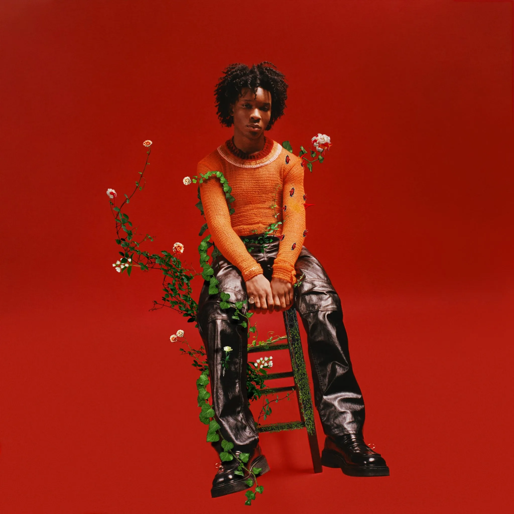

Keshi
Born Casey Luong, Keshi grew up in the suburbs of Houston, Texas.
After picking up his grandfather's guitar at 13 (despite his
mother's many protests), he taught himself how to play, and fell in
love with the intricacies of songwriting, mixing, and producing.
Before the 27-year-old was working with YSL for his tour looks and
selling out Los Angeles's Fonda Theater and Webster Hall in New
York, he wrestled with dual identities. How could he balance the
worlds of Casey, the person, and Keshi, the artist?
Read More

Laufey
Born Laufey Lín Jónsdóttir, she spent her childhood divided between
Reykjavík and Washington, D.C., absorbing classical and jazz music
and even performing with the Iceland Symphony Orchestra as a
teenager. Around this time, she also gave the judges goose bumps on
Iceland Got Talent, performing a solo piano rendition of Grace
Potter's "Stars." The next year, she secured a spot on The Voice
Iceland with her take on Whitney Houston's "I Have Nothing." When it
was time for college, Lín was awarded the Presidential Scholarship
for Berklee College of Music in Boston. While there, she picked up
modern influences, collaborated with peers, and honed her skills as
a vocalist, instrumentalist, and songwriter.
Read More

Wave To Earth
Wave to earth is a three-member Korean indie band under WAVY.
Comprised of guitarist/songwriter Daniel Kim, drummer Dongkyu Shin
and bassist John Cha, the group debuted with the single "wave" in
2019, followed by EPs "wave 0.01" and "summer flows 0.02" in 2020.
While there are three official members, the band also includes
session members Jo Jung-geun, Jeon-min and Hong Seung-gi.
Read More

Dv4d
18 year old singer and songwriter, David Burke (born. March 28th,
2005) better known by his stage name d4vd, is known to be the most
versatile up-and-coming artists of 2022 hailing from Queens, New
York.
Read More